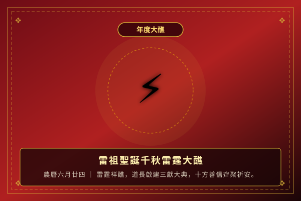
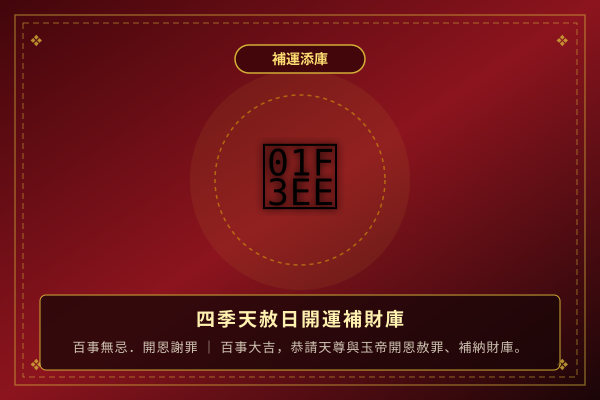
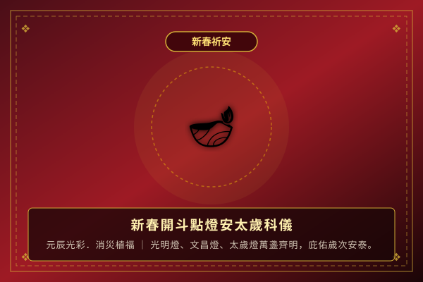
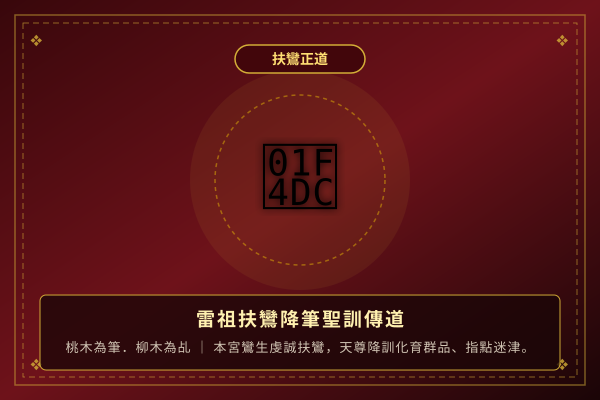
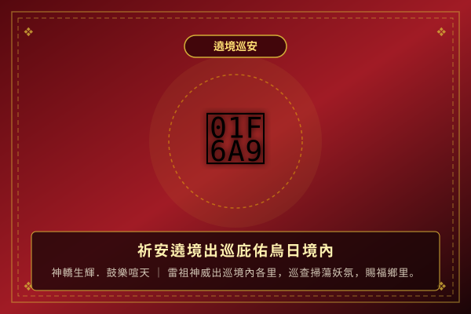
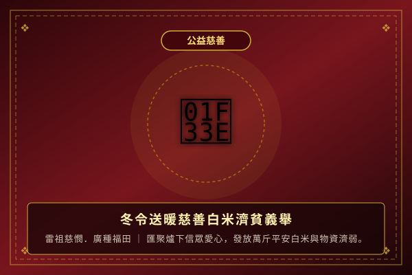
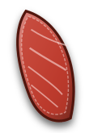

恭祝 九天應元雷聲普化天尊聖誕千秋雷霆大醮
本宮循例啟建「九天應元雷霆吉祥清醮」，恭請十方善信蒞臨參香禮拜，備有平安壽桃、長壽素麵結緣，同霑天恩神庥。
總司五雷法度，主掌萬靈生殺消長，化育群品，庇佑境內黎民。祈福植祥、消弭災愆、闔家安康。
台中烏日九元宮座落於交通匯萃、靈秀聚氣之烏日福地。本宮自創建以來，奉道教正統法度，恭請「九天應元雷聲普化天尊」降鑾坐鎮，弘道演教，為十方善信釋惑解難、拔度陰陽、消弭宿殃。
幾十年來香火鼎盛，神威遠播。九天應元雷聲普化天尊總司天界三十六雷府，威德赫赫，扶正祛邪，護佑境內黎民四時無災、八節有慶，成為地方最重要的道教信仰中心與精神依託。
道教雷部最高天神 ｜ 玉清真王之化身 ｜ 總司五雷
本宮循例啟建「九天應元雷霆吉祥清醮」，恭請十方善信蒞臨參香禮拜，備有平安壽桃、長壽素麵結緣，同霑天恩神庥。
百事無忌之天赦日，懇請雷祖與玉皇上帝開恩赦免宿世愆尤，消災解厄，填補先天財庫，廣開財源福運。
新年度光明燈、文昌智慧燈、太歲消災燈全面開放信眾線上及現場登記。由本宮道長早晚誦經祈祝，光耀元辰。
法喜充滿 ｜ 神人同慶 ｜ 記錄九元宮精彩殊勝時刻

年度盛典恭賀九天應元雷聲普化天尊萬壽，啟建三朝清醮，道長演法誦經，祈求四時無災、闔境平安。

補運添庫百事無忌殊勝良辰，敬備金銀疏文，請雷祖開恩赦愆，增補信眾財庫，迎吉納祥。

新春祈安雷祖光明燈、文昌帝君智慧燈、太歲消災燈萬盞燈光耀映，庇佑爐下弟子流年順遂。

扶鸞降筆鸞生至誠扶柳執桃，天尊降訓化育群品，白話闡示心性修持，字字珠璣銘刻肺腑。

遶境巡安神轎生輝威儀萬千，信眾香案虔誠恭迎，掃除境內陰霾凶祟，廣賜闔家福壽康寧。

公益慈善實踐雷祖濟世慈悲本懷，匯聚善心信士愛心，發放萬斤平安白米與慰問物資予弱勢鄉親。
詳細介紹
面朝廟外，敬拜三清道祖與玉皇大帝，感謝覆育之恩，祈求風調雨順、國泰民安。
恭對主神天尊，肅穆行三鞠躬禮，稟明信士姓名、農曆生辰、現居地址與所祈求事由。
參拜鄧、辛、張、陶四天君與雷部眾將官，護持正法，降妖辟邪，保佑身心康泰。
於神桌下方敬拜招財金虎爺，換取平安錢母，祈求正財偏財雙旺、趨吉避凶。
傳承道統乩鸞文化 ｜ 雷祖神聖降筆訓勉 ｜ 考究白話淺釋
默想所求，敬叩九天應元雷聲普化天尊，請示神機吉凶

道教正統「六十甲子靈籤」全套籤詩 ｜ 搖筒抽籤 ｜ 擲筊求肯 ｜ 詳盡解籤
求籤首重誠敬。請填寫您的基本資訊與欲請示之事項，隨後按下「開始搖筒抽籤」。
信士： ｜ 所求：
▲ 請點擊籤筒，天尊將賜下一支竹籤
您抽得了：
依傳統廟宇科儀，需向九天應元雷聲普化天尊擲筊請示。
若得【聖杯】方能領旨開籤；若得笑杯或陰杯，需重新抽籤。
光明燈 ｜ 文昌智慧燈 ｜ 太歲消災 ｜ 補運填庫 ｜ 雷霆吉祥大醮
台中市烏日區（鄰近烏日高鐵站特區 / 大里溪畔靈秀之鄉）
每日清晨 06:30 ～ 晚間 20:30 (法會慶典香期延長開放)
• 高鐵 / 捷運 / 台鐵三鐵共構：搭至「高鐵台中站 / 新烏日車站 / 台中捷運高鐵台中站」，出站後轉乘計程車約 6~8 分鐘即可抵達。
• 市區公車：搭乘台中市公車至烏日市區站下車步行前往。
國道一號王田交流道或台74線中彰快速道路下烏日交流道，廟埕前方與兩側附設香客專用停車場。
電話：(04) 2338-XXXX ｜ 傳真：(04) 2338-XXXX